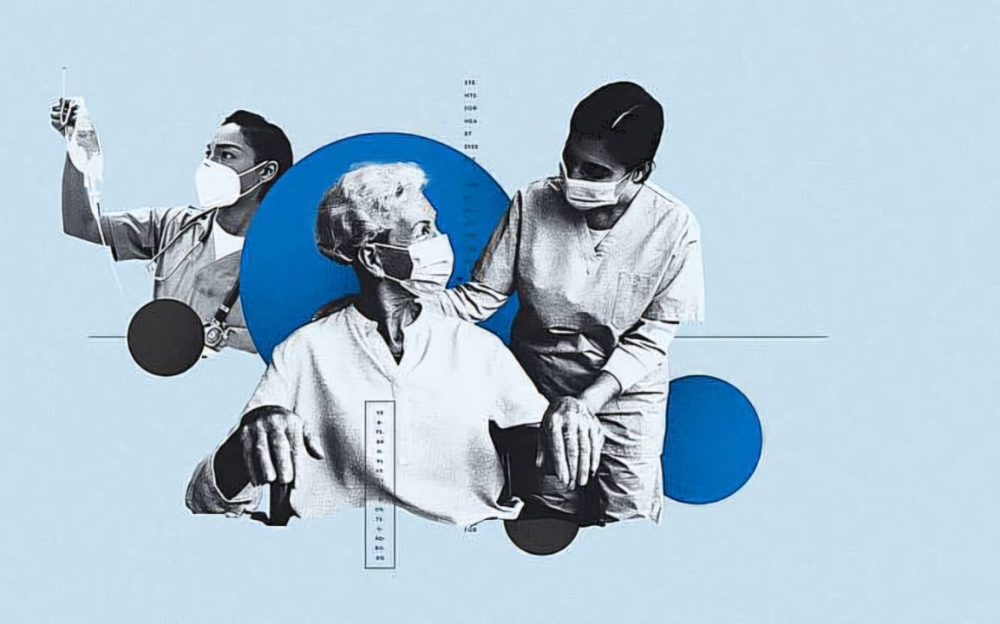
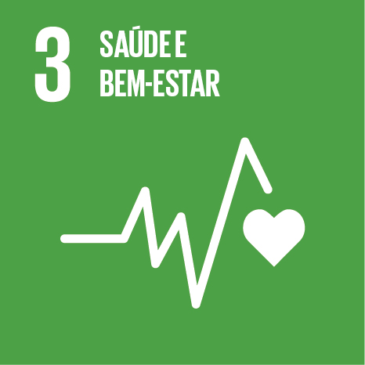

S.O.S
S.O.S
Seu assistente de triagem
Como usar o S.O.S
1. Registre seus sintomas
2. Informe intensidade e duração
3. Receba uma avaliação rápida
4. Siga as recomendações!
Importante !
• Este site não faz diagnóstico médico
• As orientações são baseadas em protocolos de triagem
• Em caso de emergência, procure ajuda imediatamente
Funcionalidades
• Histórico de registros
• Cadastro de registro
• Avaliação de triagem

O site é um programa digital de triagem que permite ao usuário registrar sintomas, incluindo intensidade e duração, para uma avaliação inicial. Com login e cadastro, o sistema armazena um histórico de registros e permite informar alguma doença crônica (caso tenha) tornando a análise mais precisa. Cada caso é avaliado com base em protocolos de triagem, gerando orientações adequadas. O objetivo é conscientizar o usuário sobre seu estado de saúde e indicar atendimento médico apenas quando necessário, reduzindo a sobrecarga no sistema público. Em resumo, a plataforma tem como objetivo ajudar a identificar a gravidade do problema.

O S.O.S é apenas uma ferramenta de triagem e orientação.
Não substitui consulta médica ou diagnóstico profissional